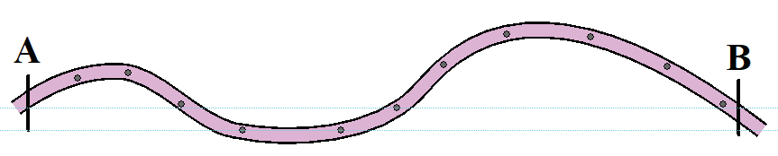

(d)By using a representative fractional (ratio) scale, ground distance from point A to B can be calculated as in the measurement of straight line distance using a piece of paper. If the representative fractional scale is 1: 50000 and a map distance measured between the two knots is 3cm, then the ground distance between points A and B is 1.5 km.
2. Using a pair of dividers
The following are the steps to measure distance on a map using a pair of dividers:
(a) Identify two points, namely point A and B as presented in Figure 16.

(b) Divide the distance that needs to be measured into shorter, straight segments and mark them as presented in Figure 17.

(c) Use a pair divider to obtain the length of each segment one after the other, as presented in Figure 18.